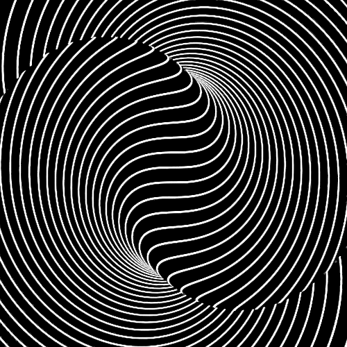
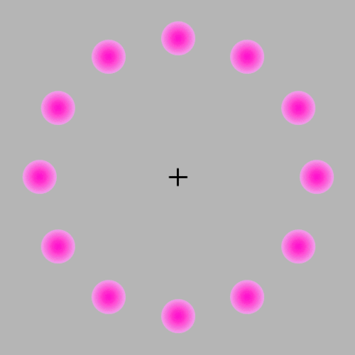

Optiske illusjoner
 Dette er en liten samling med ett par gøye optiske illusjoner. Det er ganske rart hvordan mønstre og bevegelser kan lure hjernen til å se noe som ikke er der. Man kan dele optiske illusjoner i to grupper, fysologiske og kognitive. Fysologiske illusjoner er illusjoner som kommer av etterbildet til ett skarpt lys, og er antatt å forekomme av overdreven stimulering av øynene eller hjernene. En kognitiv illusjon er en illusjon som oppstår når ett sanseinntrykk kobles opp mot vår virkelighetsoppfatning. Det er da hjernen som underbesvisst prøver å finne en logisk forklaring på noe vi ikke klarer å forstå er fysisk mulig.

Fun facts
- Flere kunstnere bruker optiske illusjoner for å skape større inntrykk i bildene sine.
- I mange filmer blir det brukt optiske illusjoner i stede for CGI.
- En optisk illusjon har som mål å lure hjernen til å se en sammenheng som ikke eksisterer.
- Man kan bruke optiske illusjoner i bilder for å skape en falsk oppfatning av dybde.
- Med optiske illusjoner kan man lage design som bryter natureslover.

Stilling i gruppen
Jeg har fått ansvaret å være leder for gruppen. Jeg er litt usikker på hvordan dette kommer til å bli praksis, men i prinsippet innebærer det alt i fra å være ordstyrer i gruppemøtene, til å arrangere teambonding og sørge for at alle gjør jobben sin.